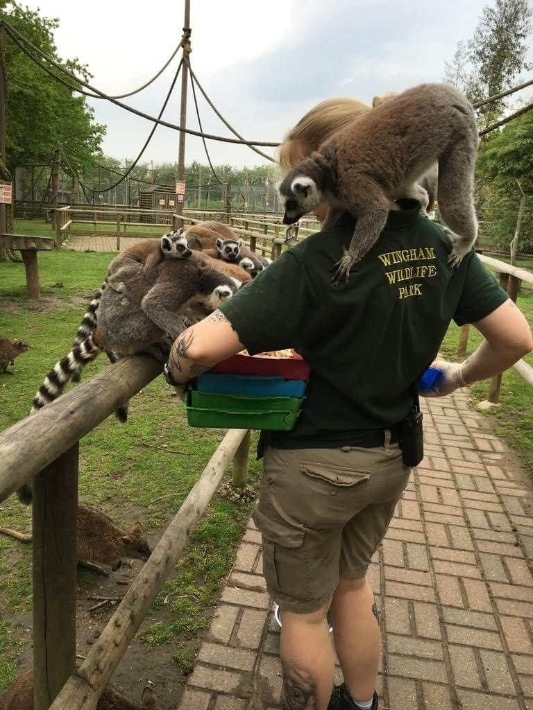

| Home | Info | Tickets | Media | Form |
| ზოოლოგიური პარკი საქართველოს დედაქალაქ თბილისში დაარსდა 1927 წლის 10 თებერვალს თბილისის საქალაქო საბჭოს აღმსაკომის დადგენილებით. ზოოპარკის მოსაწყობად მდინარე ვერეს ხეობაში გამოიყო 70-მდე ჰა მიწის ნაკვეთი. გათვალისწინებული იყო შემდეგი განყოფილებები: კავკასიის ანუ მხარეთმცოდნეობის, ყოფილი სსრკ-ის ფაუნის, ეგზოტიკური, სასოფლო-სამეურნეო ცხოველთა და სხვა. |
| ფიონა | კნუტი | შაო | ტოში | აპრილი |
| ჰიპოპოტამი | პოლარული დათვი | პანდა | მარტორქა | ჟირაფი |
|  |
ჩვენი ზოოპარკი ყოველ დღე ასობით ცხოველს უვლის,
ამისათვის ყოველთვის გვჭირდებიან მოხალისეები, რადგან ჩვენმა ოთხფეხა
მეგობრებმა არ მოიწყინონ და მათ ყოველთვის ჰყავდეთ მომვლელი.
მოხალისედ გასაწევრიანებლად გთხოვთ შეავსოთ ონლაინ ფორმა ან დარეკოთ მითითებულ ნომერზე: 123-456-789 |
|